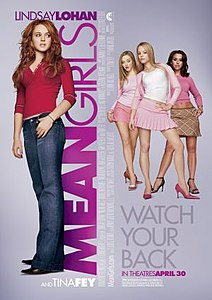

Мои любимые фильмы
Неоновый демон
Краткое содержание фильма
Едва окончив школу, мечтающая стать моделью провинциалка Джесси отправляется покорять Лос-Анджелес. Через тернии (одна, без денег, чужой город, дешевый мотель), но и через нужные знакомства, фотосессии, вечеринки — к звездам. И вот, это сладкое слово «слава» становится былью для юной красавицы.
Кадры из фильма
О фильме
| Год |
2016 |
| Страна |
США, Дания, Бельгия,Франция |
| Жанр |
Драма, триллер, ужасы |
| Режиссёр |
Николас Виндинг Рефн |
Джон Уик
Краткое содержание фильма
Джон Уик - на первый взгляд, самый обычный среднестатистический американец, который ведет спокойную мирную жизнь. Однако мало кто знает, что он был наёмным убийцей, причём одним из лучших профессионалов в своём деле.
После того как сынок главы бандитской группы со своими приятелями угоняет его любимый «Мустанг» 1969 года выпуска, при этом убив его собаку Дейзи, которая была подарком недавно почившей супруги, Джон вынужден вернуться к своему прошлому. Теперь Уик начинает охоту за теми, кто имел неосторожность перейти ему дорогу, и он готов на всё, чтобы отомстить
Кадры из фильма
О фильме
| Год |
2014 |
| Страна |
США, Китай |
| Жанр |
Боевик, триллер, криминал |
| Режиссёр |
Чад Стахелски, Дэвид Литч |
Дрянные девчонки
Краткое содержание фильма
Проведя детство в Африке с родителями-зоологами, Кэйди Хэрон думала, что знает всё про правило «выживает сильнейший». Но закон джунглей полностью пересматривается, когда домашняя 15-летняя девушка в первый раз попадает в обычную школу и влюбляется в бывшего парня самой популярной девчонки в школе.
Кадры из фильма

О фильме
| Год |
2004 |
| Страна |
США, Канада |
| Жанр |
Комедия |
| Режиссёр |
Марк Уотерс |